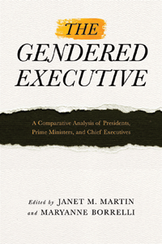

<HTML><head><script> (function(i,s,o,g,r,a,m){i['GoogleAnalyticsObject']=r;i[r]=i[r]||function(){  (i[r].q=i[r].q||[]).push(arguments)},i[r].l=1*new Date();a=s.createElement(o),  m=s.getElementsByTagName(o)[0];a.async=1;a.src=g;m.parentNode.insertBefore(a,m)   })(window,document,'script','//www.google-analytics.com/analytics.js','ga');   ga('create', 'UA-43183130-1', 'temple.edu');   ga('send', 'pageview'); </script><title>Edited by Janet M. Martin and MaryAnne Borrelli: The Gendered Executive - Print</TITLE><link rel="stylesheet" href="../general.css" type="text/css"><SCRIPT LANGUAGE = JAVASCRIPT></SCRIPT></HEAD><BODY LINK="#3152A5" VLINK="#3152A5" ALINK=Gray BGCOLOR=White><CENTER><P CLASS=intro><br>Examining national executives through the lens of identity, representation, and power<br><br></P></CENTER><br>&nbsp;<!--none//--><Table width="100%" border=0 cellspacing=5><tr><td width="175" align="center"></td><td><h1 class = "booktitle">The Gendered Executive</h1> <h1 class = "subtitle">A Comparative Analysis of Presidents, Prime Ministers, and Chief Executives</h1><h3 class="author">Edited by Janet M. Martin and MaryAnne Borrelli</h3><p class="info">paper EAN: 978-1-4399-1364-2</br>$34.95, Aug 16, <font color=#990033>Available</font><br><p class="info">cloth EAN:  978-1-4399-1363-5</br>$94.50, Aug 16, <font color=#990033>Available</font><br><p class="info">Electronic Book EAN: 978-1-4399-1365-9</br>$34.95, Aug 16, <font color=#990033>Available</font><br><p class="info">296 pp, 6  x  9, 22 tables, 5 line drawings</p></td></tr></table></P></td></tr></table><BR><BLOCKQUOTE><p><i>"This collection of uniformly strong essays spans several disciplines with a central focus on&nbsp;gender&nbsp;and&nbsp;executive&nbsp;politics. It disrupts the status quo and challenges scholars to examine questions long neglected in the study of political&nbsp;executives. Approached from a cross-national perspective, </i>The Gendered Executive<i> is likely to have a significant impact on the way scholars study&nbsp;executive&nbsp;politics for years to come."<br>&#8212;</i><b>Michael A. Genovese</b>, President, World Policy Institute at Loyola Marymount University<br></BLOCKQUOTE><P><P><p>Excluded from the ranks of elite executive decision-makers for generations, women are now exercising power as chiefs of government and chiefs of state. As of April 2016, 112 women in 73 countries have served as presidents or prime ministers.  <br><p><i>The Gendered Executive</i> is a critical examination of national executives, focusing on matters of identity, representation, and power. The editors and contributors to this volume address the impact of female executives through political mobilization and participation, policy- and decision-making, and institutional change. Other topics include party nomination processes, the intersectionality of race and gender, and women-centered U.S. foreign policy in southern Africa. In addition, case studies from Chile, India, Portugal, and the United States are presented, as are cross-national comparisons of women leaders in Latin America. <br><p><i>The Gendered Executive</i> will enhance our understanding of the complexity of gender in  and comparative analyses of executive politics.<br /><b><br /></b><i>Contributors include: Amy C. Alexander, Sheetal Chhabria, Georgia Duerst-Lahti, Maria C. Escobar-Lemmon, Cory Charles Gooding, Lilly Goren, Karen M. Hult, Farida Jalalzai, Daniela F. Melo, Catherine Reyes-Housholder, Ariella R. Rotramel, Leslie A. Schwindt-Bayer, Michelle M. Taylor-Robinson, and the editors</i><br><P CLASS="top"><A HREF="#top">BACK TO TOP</A></P></p><P><h2  class="inpageheading"><A NAME="excerpt"></a>Excerpt</h2><p>Read Chapter 1 (pdf).<br><P CLASS="top"><A HREF="#top">BACK TO TOP</A></P></p><p><h2  class="inpageheading"><A NAME="reviews"></a>Reviews</h2><p>"<i>The theoretical and methodological premise of&nbsp;</i>The Gendered Executive<i>&nbsp;is innovative and groundbreaking. Not only is the topic itself an interesting take on gender and executive political leadership, but the editors and contributors&#8212;recognized experts in their fields&#8212;look at&nbsp;how&nbsp;these women achieved their positions. This volume is impressive, well thought-out and researched. It will make an excellent addition to the growing literature on women in executive politics and an important contribution to the expanding literature on women as national-level executive leaders</i>."<br>&#8212;<b>Lori&nbsp;Cox&nbsp;Han</b>, Professor of Political Science at Chapman University<br><p>"<i>There are very few book-length treatments of&nbsp;gender&nbsp;and chief&nbsp;executive&nbsp;office, and certainly no book that combines a focus on the U.S. presidency with comparative perspectives. What I like the most about&nbsp;</i>The&nbsp;Gendered&nbsp;Executive<i>&nbsp;is the attempt to create a more meaningful dialogue across two literatures that rarely 'speak' to each other: American politics and comparative politics. The editors' focus on&nbsp;gender, not just women, and the geographic focus, creates a substantive breadth in the volume that is broad and inclusive. As more women are entering the&nbsp;executive&nbsp;branch around the world,</i> The&nbsp;Gendered&nbsp;Executive<i>&nbsp;will become an important source for research</i>."<br>&#8212;<b>Susan Franceschet</b>, Professor of Political Science at the University of Calgary<br>
<p><i>"Martin and Borrelli provide an exceptional collection of 12 analyses of the intersections of gender, sex, and the executive branch. The editors include American and comparative political perspectives, providing a much-needed integration of research on gender and executive leadership. Individual chapters reveal diverse methodological approaches, from individual case studies...to quantitative analysis. The text also demonstrates that although the US has not yet had a female president, there remains a rich field for analysis, including vice-presidential candidates...and gendered policy making.... This text is a rich contribution to the fields of gender, sex and politics, and executive politics....Summing Up: Highly recommended."</i>
	<br>&#8212;<b><i>Choice</i></b>
<P CLASS="top"><A HREF="#top">BACK TO TOP</A></P></b></p><BR><p><h2 class="inpageheading"><A NAME="contents"></a>Contents</h2><P><SPAN STYLE="font-family: 'Verdana';font-size: 13px;" >List of Tables and Figures<BR>Acknowledgments<BR>&nbsp;<BR>1. Learning What We Know: The Complexity of Gender in U.S. and Comparative Executive Studies &nbsp;&bull; &nbsp;</SPAN><SPAN STYLE="font-family: 'Verdana';font-size: 13px;font-style:italic;" >Janet&#8199;M.&#8199;Martin&#8199; and&#8199;MaryAnne&#8199;Borrelli</SPAN><SPAN STYLE="font-family: 'Verdana';font-size: 13px;" >&#8199;<BR><BR></SPAN><SPAN STYLE="font-family: 'Verdana';font-size: 13px;font-weight: bold;" >I  Identity and Ambition</SPAN><SPAN STYLE="font-family: 'Verdana';font-size: 13px;" ><BR>2. The Symbolic Effects of Female Heads of State and Government &nbsp;&bull; &nbsp;</SPAN><SPAN STYLE="font-family: 'Verdana';font-size: 13px;font-style:italic;" >Amy&#8199;C.&#8199;Alexander&#8199;and&#8199;Farida&#8199;Jalalzai</SPAN><SPAN STYLE="font-family: 'Verdana';font-size: 13px;" >&#8199;<BR>3. President Barack H. Obama and the Rhetoric of Race: Between Responsibility and Respectability &nbsp;&bull; &nbsp;</SPAN><SPAN STYLE="font-family: 'Verdana';font-size: 13px;font-style:italic;" >Cory&#8199;Charles&#8199;Gooding</SPAN><SPAN STYLE="font-family: 'Verdana';font-size: 13px;" >&#8199;<BR>4. India&rsquo;s Prime Minister: Narendra Modi, Gender, and Governance &nbsp;&bull; &nbsp;</SPAN><SPAN STYLE="font-family: 'Verdana';font-size: 13px;font-style:italic;" >Sheetal&#8199;Chhabria</SPAN><SPAN STYLE="font-family: 'Verdana';font-size: 13px;" >&#8199;<BR>5. Sarah Palin&rsquo;s and Paul Ryan&rsquo;s Vice Presidential Acceptance Speeches: Gender and Partisan Appeals to the Republican Party &nbsp;&bull; &nbsp;</SPAN><SPAN STYLE="font-family: 'Verdana';font-size: 13px;font-style:italic;" >MaryAnne&#8199;Borrelli&#8199;and&#8199;Lilly&#8199;J.&#8199;Goren</SPAN><SPAN STYLE="font-family: 'Verdana';font-size: 13px;" >&#8199;<BR>&nbsp;<BR></SPAN><SPAN STYLE="font-family: 'Verdana';font-size: 13px;font-weight: bold;" >II&nbsp; Policy and Representation</SPAN><SPAN STYLE="font-family: 'Verdana';font-size: 13px;" ><BR>6. The Impact of </SPAN><SPAN STYLE="font-family: 'Verdana';font-size: 13px;font-style:italic;" >Presidentas</SPAN><SPAN STYLE="font-family: 'Verdana';font-size: 13px;" > on Political Activity&nbsp; &bull; &nbsp;</SPAN><SPAN STYLE="font-family: 'Verdana';font-size: 13px;font-style:italic;" >Catherine&#8199;Reyes-Housholder&#8199;and&#8199;Leslie&#8199;A.&#8199;Schwindt-Bayer</SPAN><SPAN STYLE="font-family: 'Verdana';font-size: 13px;" >&#8199;<BR>7. U.S. Presidents and LGBT Policy: Leadership, Civil Rights, and Morality Claims, 1977&ndash;2015 &nbsp;&bull; &nbsp;</SPAN><SPAN STYLE="font-family: 'Verdana';font-size: 13px;font-style:italic;" >Ariella&#8199;R.&#8199;Rotramel</SPAN><SPAN STYLE="font-family: 'Verdana';font-size: 13px;" ><BR>8. Representation in and by the White House &nbsp;&bull; &nbsp;</SPAN><SPAN STYLE="font-family: 'Verdana';font-size: 13px;font-style:italic;" >Karen&#8199;M.&#8199;Hult</SPAN><SPAN STYLE="font-family: 'Verdana';font-size: 13px;" ><BR>9. The European Union, Executive Politics, and the Women&rsquo;s Movement in Portugal: The Consequences of Europeanization, 1986 to the Present &nbsp;&bull; &nbsp;</SPAN><SPAN STYLE="font-family: 'Verdana';font-size: 13px;font-style:italic;" >Daniela&#8199;F.&#8199;Melo</SPAN><SPAN STYLE="font-family: 'Verdana';font-size: 13px;" ><BR></SPAN><SPAN STYLE="font-family: 'Verdana';font-size: 13px;font-style:italic;" >&nbsp;</SPAN><SPAN STYLE="font-family: 'Verdana';font-size: 13px;" ><BR></SPAN><SPAN STYLE="font-family: 'Verdana';font-size: 13px;font-weight: bold;" >III &nbsp;Politics and Power</SPAN><SPAN STYLE="font-family: 'Verdana';font-size: 13px;" ><BR>10. The U.S. Presidency and the Aftermath of Revolution: Are Women&rsquo;s Rights Human Rights? &nbsp;&bull; &nbsp;</SPAN><SPAN STYLE="font-family: 'Verdana';font-size: 13px;font-style:italic;" >Janet&#8199;M.&#8199;Martin</SPAN><SPAN STYLE="font-family: 'Verdana';font-size: 13px;" ><BR>11. U.S. Development Policy and Women&rsquo;s Empowerment: Challenging the Foreign-Policy Bureaucracy to Implement Fully Integrated Gender Policy&nbsp; &bull; &nbsp;</SPAN><SPAN STYLE="font-family: 'Verdana';font-size: 13px;font-style:italic;" >Georgia&#8199;Duerst-Lahti</SPAN><SPAN STYLE="font-family: 'Verdana';font-size: 13px;" ><BR>12. Presidential Power, Partisan Continuity, and Pro-Women<BR>Change in Chile, 2000&ndash;2010 &nbsp;&bull; &nbsp;</SPAN><SPAN STYLE="font-family: 'Verdana';font-size: 13px;font-style:italic;" >Catherine&#8199;Reyes-Housholder</SPAN><SPAN STYLE="font-family: 'Verdana';font-size: 13px;" ><BR>13. &ldquo;First Women&rdquo; and &ldquo;Women&rsquo;s posts&rdquo;: Examining the Backgrounds and Credentials of Ministers in Five Presidential Democracies&nbsp; &bull;&nbsp; </SPAN><SPAN STYLE="font-family: 'Verdana';font-size: 13px;font-style:italic;" >Maria&#8199;C.&#8199;Escobar-Lemmon&#8199;and&#8199;Michelle&#8199;M.&#8199;Taylor-Robinson</SPAN><SPAN STYLE="font-family: 'Verdana';font-size: 13px;" >&#8199;<BR>&nbsp;<BR>Contributors<BR>Index</SPAN></P><P CLASS="top"><A HREF="#top">BACK TO TOP</A></P></p></P><BR>&nbsp;<p><P><H2  class="inpageheading"><A NAME="author bio"></a>About the Author(s)</H2><p><b>Janet M. Martin</b> is Professor of Government and Legal Studies at Bowdoin College; author of <i>The Presidency and Women: Promise, Performance, and Illusion</i> and <i>Lessons from the Hill: The Legislative Journey of an Education Program</i>; and co-editor of <i>The Other Elites: Women, Politics, and Power in the Executive Branch.</i><br><p><b>MaryAnne Borrelli</b>&nbsp;is Professor of Government at Connecticut College; author of&nbsp;<i>The Politics of the President's Wife</i> and&nbsp;<i>The President's Cabinet:&nbsp;Gender, Power, and Representation;</i>&nbsp;co-author of&nbsp;the fourteenth edition of <i>Understanding American Government;</i>&nbsp;and co-editor of<i>&nbsp;The Other Elites:&nbsp;Women, Politics, and Power in the Executive Branch.</i><br><P CLASS="top"><A HREF="#top">BACK TO TOP</A></P></P><P><h2 class="inpageheading"><a name="subjects"></a>Subject Categories</h2> <p><a href="http://www.temple.edu/tempress/political.html" target="_top">Political Science and Public Policy</a> <br><a href="http://www.temple.edu/tempress/gender.html" target="_top">Gender Studies</a> <br><a href="http://www.temple.edu/tempress/women.html" target="_top">Women's Studies</a> <br><a href="" target="_top"></a> <br><a href="" target="_top"></a> </p></P><P></P><P CLASS="top"><A HREF="#top">BACK TO TOP</A></P></td><td width=2%>&nbsp;</td><td width=5>&nbsp;</td></tr></table><BR><font face="Arial" size="1"><a href="copyright.html" OnMouseOver="window.status='Web Copyright Policy';return true;" OnMouseOut="window.status=''" TITLE="Web Copyright Policy">&copy;</a> 2016 <a href="http://www.temple.edu" target="new" OnMouseOver="window.status='Link to Temple University home page';return true;" OnMouseOut="window.status=''" TITLE="Link to Temple University home page">Temple University</a>. All Rights Reserved. This page: http://www.temple.edu/tempress/titles/2407_reg.html</font></BODY></HTML>                    
